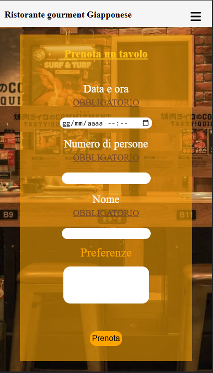
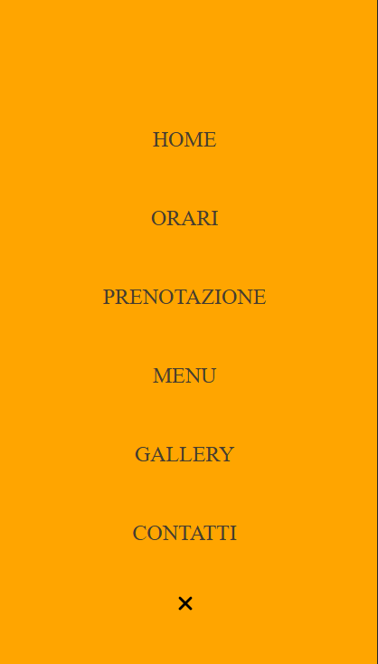
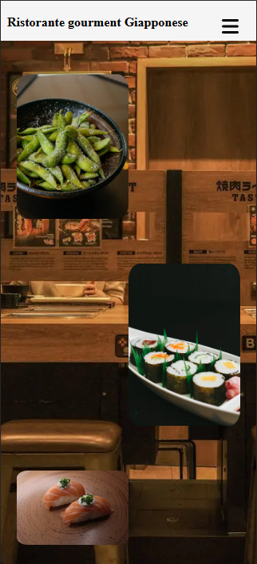
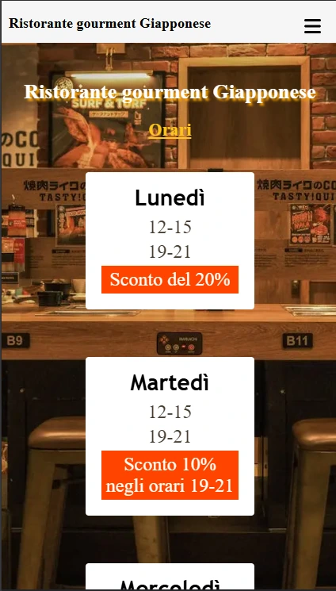
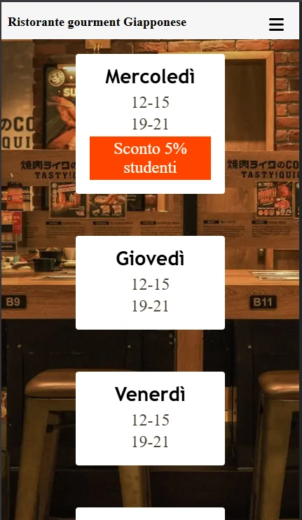
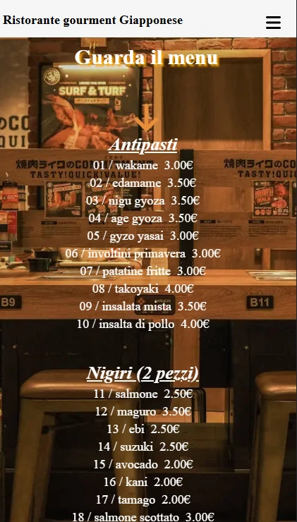
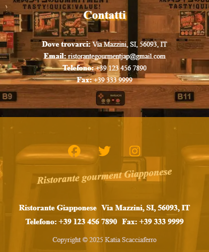

Il sito web presenta un menù dinamico che se visualizzato da PC sarà totalmente aperto mentre se visualizzato da mobile verrà chiuso al fine di gestire il sito web in modo più responsive. Inoltre, sono presenti gli orari di apertura del ristorante con sconti, un sistema di prenotazione, una gallery dei nostri piatti e una sezione in cui è possibile contattare il ristorante.






